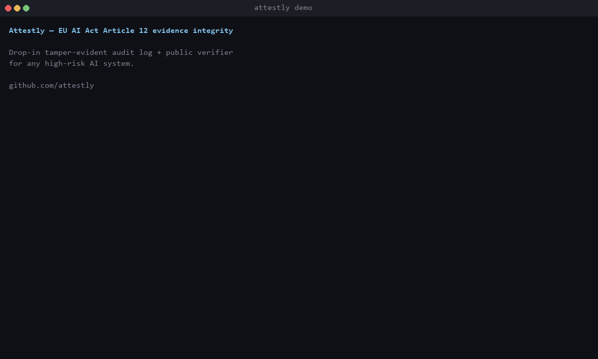

A drop-in tamper-evident audit log + regulator-runnable verifier for any high-risk AI system. Public cryptographic commitments. Private decision payloads. GDPR-compatible by construction.

Real cryptographic tamper detection, end-to-end, in 27 seconds.
Apache-2.0 in perpetuity. No commercial dependency. No vendor lock-in.
Every AI decision is canonically hashed, signed with the system's Ed25519 key, and appended to a hash-chained ledger. Database triggers enforce append-only at the SQL layer.
Merkle roots are published to a transparency log as signed commitments — never the decision payloads themselves. The architectural pattern is Certificate Transparency.
A standalone CLI + browser-WASM verifier. A regulator drops an exported evidence bundle into the tool — and mathematically detects any post-publication tampering.
From 2 August 2026, every high-risk AI system in the EU (credit scoring, hiring, biometric, employment, essential services, law enforcement, migration, justice — Annex III) must maintain automatic logs over its lifecycle. The regulatory framework has no technical assurance layer for evidence integrity.
Attestly is that layer, published as open digital base infrastructure — not a SaaS product, not a vendor stack.
Rust 1.85+ required. SQLite bundled. No other dependencies.
# Clone and build git clone https://github.com/attestly/attestly cd attestly cargo build --release # Run the end-to-end demo (bash) bash examples/demo.sh # …or PowerShell on Windows pwsh examples/demo.ps1 # …or render the screencast yourself python examples/render_demo.py